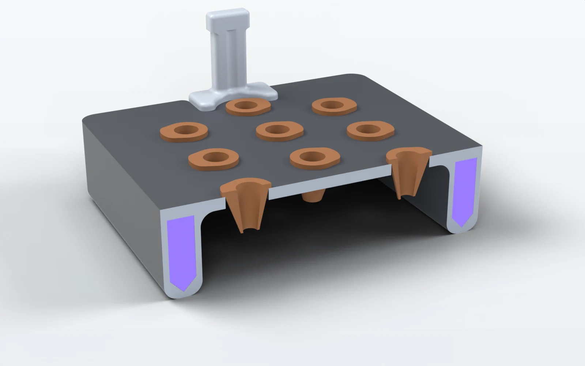
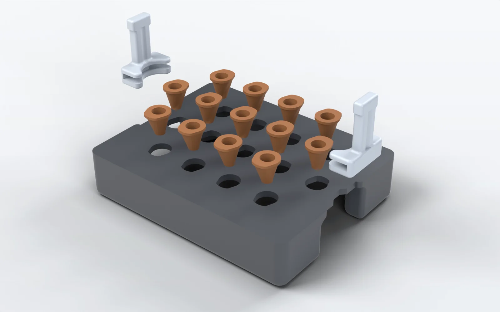
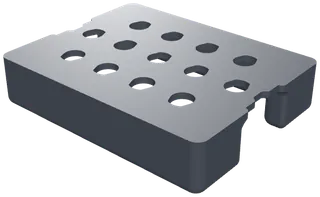
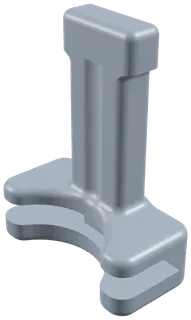
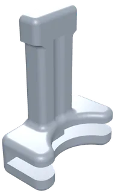
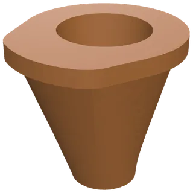

Hydroponics
Floating Plate
Section 1, the 3D design and animation, is the walkthrough above.
Purpose
2.1 Standardization of Hydroponics for Labs
Labs that grow Arabidopsis in liquid medium tend to improvise the setup: a piece of foam cut to size, a mesh taped over a container, or a fixed plate sitting above a reservoir. None of it is repeatable between labs, or even between runs in the same lab.
Our plate floats on the medium, so the seedlings stay at the same depth no matter how much liquid is left. The whole thing is four STLs printed on a normal FDM machine, so another lab can run the same geometry we did. Same depth, same spacing, same conditions, whoever is running it.
2.2 The Problem With Fixed Plates
Our first version was a fixed plate sitting over a liquid chamber. The plate held the seedlings at a set height and the medium sat underneath, so the level had to be set by hand before every run.
The level has to sit just under the growing platform and as high as we can get it. Too low and the roots lose contact; too high and the platform floods. The window between those two failures is narrow.
It also does not stay where you put it. The plants drink and the medium evaporates, so a level that was right at the start of a run is wrong by the end of it. Someone has to watch the reservoir and top it up, and every top-up is a chance for conditions to drift between replicates. That is what we set out to remove.
Design Requirements
R1 · Constant root depth
Hold root depth constant for the whole run, with no manual topping up.
The plate floats, so the seedlings stay at the same depth however much liquid is left. Sections 2.2 and 4.
R2 · Thirteen seedlings
Carry 13 Arabidopsis seedlings.
Thirteen seed positions in rows of four, five and four. Section 5.
R3 · Flotation in the frame
Float on the medium under its own buoyancy, with no separate float attached.
Sealed air built into its own frame: no foam block, nothing strapped underneath. Section 4.
R4 · One standard printer
Print in PLA on a standard FDM machine.
PLA, 15% gyroid infill in the pontoon sections, no supports needed. Section 8.2.
R5 · Nothing to glue
Assemble with no adhesives and no fasteners.
Clip-in handles, and nothing to glue or strap on. Section 5.
Buoyancy Design
The plate floats on a sealed air volume built into its own frame. There is no foam block and nothing strapped underneath. The pontoon sections run hollow with a teardrop cross-section and print at 15% gyroid infill, which keeps the walls light while leaving enough internal structure to hold their shape.
The teardrop is the sealed chamber inside each pontoon: a box section 6.99 mm wide whose lower sides are chamfered at about 45° to a point, so its cross-section is a pentagon 20.32 mm deep, walled in 1.59 mm of plastic (). The two chambers hold 42.27 cm³ of sealed air between them.
Sizing them is a displacement problem. The plate has to displace its own mass plus the seedlings plus whatever water the printed part takes on, and it has to do that while sitting at the freeboard that puts the roots in the medium and the crowns above it. We ran this calculation again every time the design changed, because any change to wall thickness or footprint moves the mass and the displacement at the same time.
- MassThe plate's own mass, plus the seedlings, plus whatever water the printed part takes on.
- BuoyancyThe medium the pontoons displace below the waterline (hatched).
- FreeboardWhere the two balance: the roots in the medium and the crowns above it.
Measured off the CAD, the displacement at each waterline gives the plate’s load line (). In water at 1.00 g/cm³ every cubic centimetre displaced floats a gram, so weigh the assembled plate with its seedlings, find that mass along the bottom, and read the freeboard up the side; lists seven of its points. Down the straight sides of the pontoons the hull gains 3.51 cm³ per millimetre of draft, so every 3.5 g added sinks it about 1 mm.
- The waterline drawn in : 54.2 g floats with 9.2 mm of freeboard.
- The slab’s underside meets the water at 79.4 g and 3.2 mm. From here the whole slab displaces, so each gram sinks it less.
- The slab top is awash at 111.9 g.
- Solid PLA: printed solid, the sixteen parts would weigh 92.6 g at most, and float with 1.9 mm of freeboard.
Displacement at each waterline7 waterlines
| Freeboard | Draft | Plate alone | Assembled |
|---|---|---|---|
| 18.2 mm | 6.9 mm | 22.4 cm³ | 22.4 cm³ |
| 15.2 mm | 9.9 mm | 32.9 cm³ | 32.9 cm³ |
| 12.2 mm | 12.9 mm | 43.4 cm³ | 43.4 cm³ |
| 9.2 mm, as drawn | 15.9 mm | 54.0 cm³ | 54.2 cm³ |
| 6.2 mm | 18.9 mm | 64.5 cm³ | 65.5 cm³ |
| 3.2 mm, slab underside at the water | 21.9 mm | 75.9 cm³ | 79.4 cm³ |
| 0, slab top at the water | 25.1 mm | 105.9 cm³ | 111.9 cm³ |
Freeboard is the slab top above the water; draft, the pontoon bottoms below it. Displacement is the volume of the printed shell below the waterline, sealed air included, computed exactly from the STLs. Assembled adds the parts of the two handles and the thirteen seed holders that sit under the water. Assumes the medium reaches the slab's underside, with no air trapped beneath it.
An earlier draft, and the ballast poleswhere the margin was
One worked case from the drafts shows how tight the sizing is. At a plate mass of roughly 180 g the pontoons came up short and needed about 0.65 cubic inches (about 10.7 cm³) of extra volume each to sit at the target freeboard. That mass is not this plate: 180 g is well past the 111.9 g at which the plate measured here goes under (). The case is an earlier draft’s, and no printed plate has been put on a balance, so the load line above stands on the STLs alone.
The four corner poles on the first floating version were the safety margin on this. They took washers as ballast in case the plate rode too high. Later iterations tuned the volume closely enough that the poles came off.
Geometry and Mechanical Design

- 1Teardrop cross-section on the pontoon tubes, which prints without support and sheds the overhang cleanly. Each is a box section with its lower sides chamfered to a point: a pentagon.
- 2The frame is the flotation. Sealed air chambers are part of the structure, so there is nothing to glue or strap on and nothing to come loose in the medium. The slab, both pontoons and their chambers print as one piece.
- 3Clip-in handles, so the plate lifts out of the reservoir without anyone touching the seedlings.
- 4Corner poles for washer ballast on the first floating version, removed once the buoyancy was tuned (section 6).
- Sealed air chamber, hidden below the slab
- Pontoon, hidden below the slab
- Clip-in handle
- Sealed air, in section
- Printed plate, in section
- Seed holder
Measured geometry11 dimensions
Design Evolution
-
Fixed plate
A plate held at a set height over a liquid chamber. It worked, but only for as long as someone kept the level correct, which is covered in 2.2.
-
Why it changedThe level does not stay where you put it: the plants drink and the medium evaporates, so someone had to watch the reservoir and top it up (2.2).
First floating version
started 6/25We moved the flotation into the frame and let the plate ride on the surface. Corner poles carried washers so we could trim the freeboard after printing instead of reprinting the whole part.
-
How it changedThe poles were the safety margin on the buoyancy. We ran the displacement calculation again every time the design changed (section 4), and later iterations tuned the volume closely enough that the poles came off.
Current version
Smaller footprint, clip-in handles, and buoyancy tuned closely enough that the ballast poles were no longer doing anything. This is the version in section 8.
The side views are schematic, not to scale. The current version is drawn from its CAD in .

DBTL cycles on the Plants DBTL page
Full DBTL Cycles
The plate’s full design–build–test–learn cycles belong on the Plants DBTL page. Stage by stage, this is what this page already holds.
Reproduction
8.1 Bill of Materials

Printed parts4 parts, 16 pieces
| Part | Qty | Volume, each | Cost |
|---|---|---|---|
 Floating plate | 1 | 63.60 cm³ | |
  Handle, left and right | 2 | 2.76 cm³ | |
 Seed holder | 13 | 0.43 cm³ | |
| Total | 16 | 74.72 cm³ in all |
All four parts print in PLA. Volume is the solid volume of one part in the CAD, not the filament a print uses, which depends on walls and infill. No cost is recorded for any of them.
8.2 Print Settings
Print settings4 rows
- Material
- PLA
- Printer
- A standard FDM printer
- Infill
- 15% gyroid in the pontoon sections
- Supports
- None needed
Layer height, wall count and print orientation are not recorded.
Design Files
The four printed parts, one STL each, rendered here from their own files. The plate, the handles and the holder all print in PLA (8.2). The files are not yet attached to this page.
The four STLsone per printed part
- 1Floating plate
The slab, both pontoons and their sealed chambers, as one print. 117.50 × 92.50 × 25.08 mm.
- 2Left handle
Its foot wraps one end of the slab and locates on a trapezoid notch. 12.34 × 25.40 × 32.89 mm.
- 3Right handle
The left handle’s mirror image, for the other end of the slab.
- 4Seed holder
A flange over a tapered basket, 12.07 mm tall. Print thirteen, one for each bore.